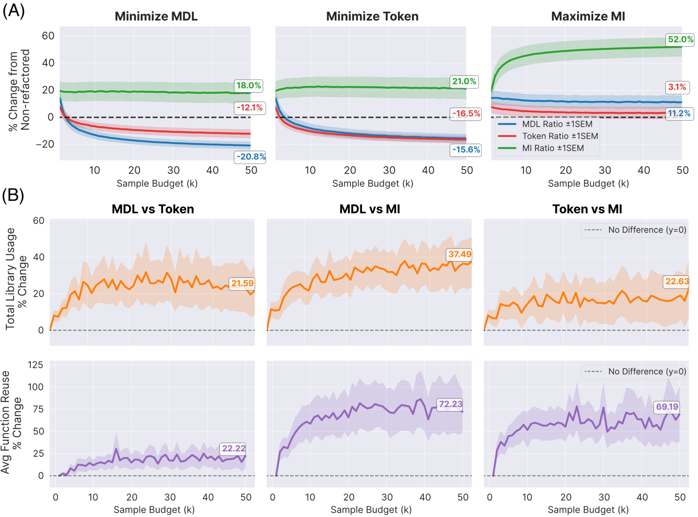
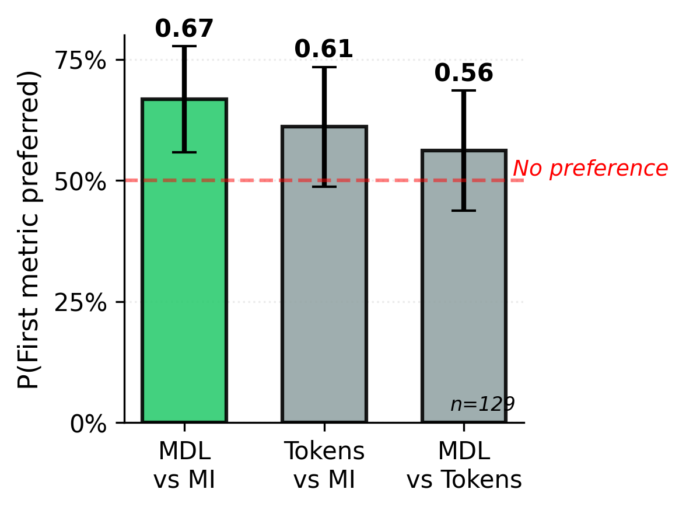
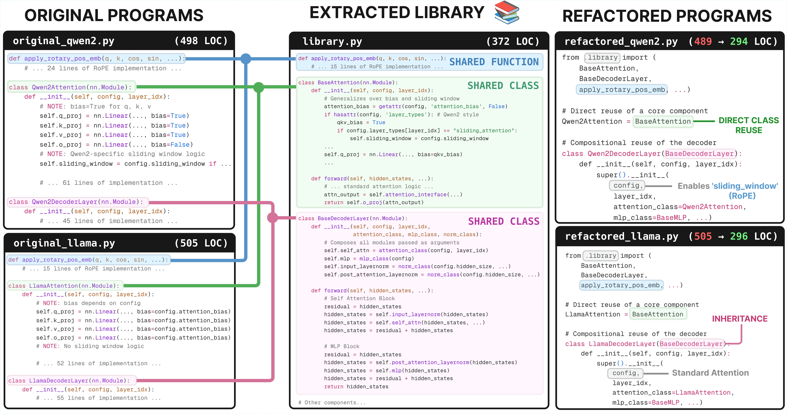

Maintainable and general software allows developers to build robust applications efficiently, yet achieving these qualities often requires refactoring specialized solutions into reusable components. This challenge becomes particularly relevant as code agents become used to solve isolated one-off programming problems. We investigate code agents' capacity to refactor code in ways that support growth and reusability. We first investigate what makes a good refactoring, finding via simulation results and a human study that Minimum Description Length best correlates with preferable refactorings. We then present both a benchmark and a method for refactoring: MiniCode, a benchmark where multiple files must be refactored into a shared library, and Librarian, a sample-and-rerank method for generating reusable libraries. We compare Librarian to state-of-the-art library generation methods, and study it on real-world code bases.
Motivation: Technical Debt in the Age of AI
Much of software engineering involves not writing new code, but rewriting existing code—debugging, optimizing, and refactoring. Poor rewrites lead to "technical debt," a pervasive issue costing the software industry an estimated $2 trillion annually. This problem may be amplified by the rise of Large Language Models (LLMs). While excellent at solving isolated programming tasks, their limited context can lead them to generate specialized, one-off solutions that add to a codebase's redundancy rather than reducing it. This raises a critical question:
Can we use library learning to build code agents that perform large-scale, repository-level refactoring to create more reusable and maintainable software?
Problem Statement
For now assume a placeholder metric $M$ measuring refactoring quality; we seek to minimize $M$ while preserving correctness. Given a task comprising files $\{\rho_n\}_{n=1}^N$, we output both a new library $\mathcal{L}$, as well as rewritten refactorings of the original files, $\{\rho_n'\}_{n=1}^N$. We define tests passed $\tau(\rho_n)$ as the set of unit tests $\rho_n$ passes, and consider both refactoring several files ($N > 1$) and also refactoring a single large file ($N = 1$).
We optimize the following objective, which prefers passing at least the same tests as the original programs and minimizing the chosen metric $M$:
What makes a "good" refactoring?
Before automating refactoring, we must first define what makes a redesign "good." Simply minimizing code length is not the answer, as this can lead to obfuscated and unreadable code, a practice known as "code golf". We investigated several quantitative metrics, from classic software engineering measures like the Maintainability Index (MI) to compression-based objectives like token count and Minimum Description Length (MDL).
Asymptotic behavior of metrics in large-sample regime
Are these metrics equally effective at encouraging modular and reusable libraries? To answer this question, we run LIBRARIAN on 15 CodeContests (each of three files) using MDL, tokens, maintainability index, and cyclomatic complexity, while varying the inference-time sample budget $K$.
Tokens and MDL separate cleanly from classic software engineering metrics: optimizing tokens/MDL, both of which essentially compress the original programs, does not yield steady improvements in MI/CC, and vice-versa. To understand whether these libraries expose shared abstractions, we examine the average number of times that each library routine is used, and the average number of library invocations per library function. This teases apart tokens and MDL: optimizing MDL yields more reusable libraries (used about 8× per task), with each function called more often (called about 2.2× per function)—exceeding the other metrics we consider.

What refactoring metric do humans agree with the most?
We perform a human study to corroborate the findings using the exact same CodeContests clusters. The human study compares tokens, MDL, and Maintainability Index by (1) refactoring clusters into libraries, (2) presenting human participants with the original sources and their refactorings under pairs of metrics, and (3) eliciting pairwise preferences from human participants.
Humans prefer MDL-minimizing libraries, and although the preference is only statistically significant for MDL vs. MI, the data suggest a rank-order preference of MDL > Tokens > MI. We ran 14 participants (eliciting 129 judgments), and already we see a general preference for compression-based metrics (MDL and Tokens) with only MDL crossing the threshold of statistical significance.

We therefore adopt $M_{MDL}$ as the primary objective in the remainder of this paper: In addition to support from this human study, (1) Bayesian arguments support MDL; (2) corner cases in the style of 'Perl golf' provide existence proofs of the liability of merely minimizing tokens; and (3) reasonable proxies for library reuse favor MDL.
Method and Benchmark
LIBRARIAN: Our Refactoring Method
Now that we know how we can approximate what a good refactoring is, we introduce LIBRARIAN, our method for tackling the problem setup described above. LIBRARIAN generates a new library from a set of programs, while migrating the programs to use that new library, following a sample-and-rerank framework: prompting a backend LLM to sample K candidates, and picking the one minimizing the loss $\ell$.
Naively, we would optimize:
But this cannot work for large tasks with many programs, which would not fit into the context of most LLMs. Even long context models cannot process the entirety of e.g. the Linux kernel, and even if they could, it is not clear that such a strategy is the most efficient way of focusing the language model's attention. To address this, we wrap sample-and-rerank with a clustering algorithm that decomposes the task into manageable chunks.
How It Works:
- Clustering: Meaningful abstractions arise when programs share underlying functionality or structure. To surface these, we cluster the task's programs into small groups that are likely to share reusable structure, and refactor each cluster separately from the rest. This decomposition shrinks the prompt size, and gives independent searches for the best per-cluster refactoring, which may be more tractable. We use agglomerative clustering on code summaries generated by prompting a model to summarize each program, using text-embedding-ada-002 to embed descriptions of code sources for clustering.
- Sample-and-Rerank: For each cluster, we prompt an LLM to generate many candidate refactorings and then use our MDL objective to score and select the best one that passes all original unit tests. We accumulate a library across clusters, and when refactoring a cluster, add the accumulated library to the prompt. This lets abstractions discovered earlier carry forward across the collection.
- Library Accumulation: The simplest approach refactors each cluster independently and takes the union of each cluster's library. A more sophisticated approach accumulates a library across clusters, allowing abstractions discovered in one cluster to be useful in another cluster.
MINICODE: Our Refactoring Benchmark
MINICODE presents systems with a task comprising a set of programs, then asks them to refactor the programs into a unified library alongside refactorings of the original programs. There are two key desiderata for benchmark tasks:
- They should have related programs sharing latent abstractions
- They should also be verifiable, to measure how well refactored programs preserve functional correctness
| Domain | Files | Tasks | Avg LoC | Avg Tests / Program |
|---|---|---|---|---|
| Code Contests | 300 | 10 | 87 | 10 |
| Transformers | 10 | 1 | 538 | 181 |
| Diffusers | 11 | 2 | 685 | 75 |
| Logo | 300 | 1 | 10 | 1 |
| Date | 246 | 1 | 14 | 1 |
CodeContests
Competition problems are crafted with specific variations of algorithmic approaches in mind, resulting in both shared latent concepts and the required test cases. As a result, competition coding is both verifiable, and ready to refactor. We therefore take solutions, prompts, and tests from CodeContests, a competition programming dataset.
Huggingface 🤗 Transformers Library
We test refactoring across implementations of large language and vision–language models from the Huggingface transformers repository (modelling_<name>.py files, e.g., Qwen2, LLaMA, DeepSeek-V3). Unlike competition coding, these sources are production-scale and Huggingface requires that all changes pass an extensive suite of integration tests before merging into the main branch. A refactoring is only deemed correct if it passes the unmodified Transformers test suite, making this a high-stakes setting that requires correctness and compatibility.
Huggingface 🤗 Diffusers Library
We test refactoring across implementations of diffusion models from the Huggingface diffusers repository (unet_<name>.py and scheduler_<name>.py files, e.g., Stable Diffusion UNet, DDPMScheduler), yielding two distinct tasks. Like Transformers, Diffusers requires that all changes pass a comprehensive suite of integration tests before merging into the main branch.
What do we learn from running LIBRARIAN on MINICODE?
We empirically study LIBRARIAN on MINICODE with the goal of understanding (1) the degree to which library abstractions are reused across programs, (2) how our method compares to state-of-the-art library learning on existing datasets, and (3) whether LIBRARIAN holds value for real-world repos.
LIBRARIAN discovers reusable functions for competition programming—but some functions are only called once.
We test on CodeContests with a cluster size of $S=3$ and a sample budget of $K=8$ draws from o4-mini, as reasoning models perform well on competition programming. The resulting refactors and libraries approximately halve the MDL, which incidentally reduces program size as well (44% relative reduction in token count). Pass rate modestly improves as an incidental consequence of sampling and filtering with test cases. Libraries average 10 functions, each heavily reused: averaging 5 uses per function within tasks comprising only 10 programs. But almost 40% of library functions are only used once.
A signature of the MDL objective is a preference for whatever a language model assigns high apriori probability to. Although a single-use function does not reduce line count or tokens—the function could simply be inlined—it improves MDL if it yields a more natural decomposition of the target programs. Indeed, human-written libraries sometimes include functions that are seldom used, provided they serve as a conceptually modular abstraction. We therefore see single-use functions as a feature, not a bug.
Are these libraries useful for solving new, unseen programming problems?
Library learning has long sought to learn libraries from training programs which then help solve new unseen program synthesis tasks. The Logo and Date datasets fit within this paradigm. Recently REGAL improved the state-of-the-art on these library learning datasets. Because our clustering is heavily inspired by REGAL, for fair comparison, we keep exactly their clustering setup but add MDL-based reranking using $K=5$ samples. Despite the simplicity of these datasets, we find value in our more complicated method. Sampling and reranking by MDL yields up to a 41.8% relative improvement in solve rate on unseen programming problems, and even when the gains are more modest, we still improve upon the state-of-the-art.
| Metric | Value |
|---|---|
| Pass Rate | 90.67% ±1.88 |
| Pass Rate Improvement | 6.33% ±1.41 |
| MDL Ratio | 0.53 ±0.03 |
| Token Ratio | 0.66 ±0.04 |
| Library Functions | 10.30 ±1.41 |
| Avg Calls per Function | 5.17 ±1.08 |
| % Single Use Functions | 38.03% ±4.88 |
| Dataset | Model | Pass Rate |
|---|---|---|
| Logo | REGAL (gpt-3.5-turbo) | 49.3% ±1.1 |
| LIBRARIAN (3.5-turbo) | 69.9% ±0.9 | |
| Date | REGAL (gpt-3.5-turbo) | 90.2% ±0.5 |
| LIBRARIAN (3.5-turbo) | 94.7% ±0.7 |
How does Librarian Perform on Real-World Refactoring tasks?
The HuggingFace Transformers library is used by nearly 400k GitHub projects. We deploy LIBRARIAN to 10 source files, using Claude Code to sample $K=15$ refactorings per cluster of size $S=5$, believing an agent such as Claude Code would excel at repo-level edits. LIBRARIAN distilled repeated abstractions such as MLPs, Attention, Decoder classes, RoPE helper functions, etc., lowering MDL to 67.2% of its original value while still passing all integration tests. The top-3 refactorings based on MDL have an average of 18 abstractions (functions, classes) in the library, each of which is called on average 4.59 times in the refactored models.
For Diffusers, scheduler clusters yielded top-3 MDL refactorings with an average of 12.3 functions and 3.0 calls per function, while UNet refactorings produced richer abstractions with an average of 17.0 functions/classes and 3.43 calls each.
Refactoring at scale proved expensive: each refactoring took approximately 30 minutes to generate and test. But this is a one-off cost, and in our view, the refactored Transformers and Diffusers sources are much cleaner, and the new library is transparently reusable. To the best of our knowledge, this is the first time any library learning algorithm has been successfully applied to real-world software projects.

Learned libraries from real-world codebases are useful for unseen downstream refactoring tasks
When a library learned on one cluster of Transformer files (5 models) is applied to refactor a second cluster, LIBRARIAN reduces the unseen cluster's MDL to 73% of its original value, with an average of 3.0 calls per library function. This demonstrates that LIBRARIAN learned libraries that can be repurposed to more compactly rewrite unseen real-world code sources.
Citation
@misc{kovacic2025refactoringcodebaseslibrarydesign,
title={Refactoring Codebases through Library Design},
author={Ziga Kovacic and Justin T. Chiu and Celine Lee and Wenting Zhao and Kevin Ellis},
year={2025},
eprint={2506.11058},
archivePrefix={arXiv},
primaryClass={cs.SE},
url={https://arxiv.org/abs/2506.11058},
}